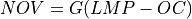
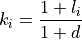
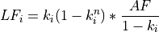
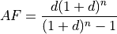
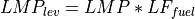
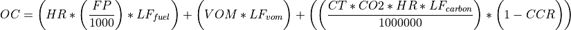
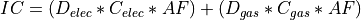
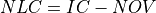

User guide¶
Generalization¶
Though cerf is demonstrated for the conterminous United States (CONUS), the package could easily be used in research ranging from regional to global analysis.
cerf requires the following inputs to be able to operate:
-
<<<<<<< HEAD
A shapefile of substations as points. The substation file must contain a field defining the minimum voltage per substation named “min_volt”.
=======
A shapefile of substations as points.
>>>>>>> b8e6c79a19da3b3c95b307ebd4b28ff2a5c01d73
A shapefile of gas pipelines as polylines if siting gas technologies.
A raster containing region IDs. Each grid cell has the value of its parent region. Currently, this is demonstrated using US states, though this could be generalized to any region/country/locale identifier matching what the electricity expansion plan provides.
A raster containing locational marginal pricing (LMP) zone IDs. Each grid cell has the ID of its LMP zones. These zones are representative of the nodal structure of the underlying model or software that produces the LMPs. Production cost models to generate this value are not US-specific and this could be generated from any number of open-source and/or commercial products.
A file of LMPs per zone (corresponding to the aforementioned raster) for each 8760 hour. Again, the source model or dataset that these are generated from does not have to be US-specific.
An electricity capacity expansion plan and its accompanying technology-specific information (e.g., variable O&M, fuel price, etc.). For the CONUS, we use the 50 US-state version of GCAM. However, GCAM is a global model and can produce this data for each of its regions.
Both the region-abbrev_to_region-name.yml and the region-name_to_region-id.yml files can be replaced with regional information.
Other variable information which is able to be modified per run, are the assumed interconnection costs per km to a substation KV class and the cost per km to connect to a gas pipeline if applicable.
Lastly, are the suitability rasters which can be composed of any number of locally-relevant exclusion criteria (e.g., protected area, critical habitat, etc.) per technology being sited in the expansion plan.
Let us know if you are using cerf in your research in our discussion thread!
Setting up a cerf run¶
The following with indroduce you to the input data required by cerf and how to set up a configuration file to run cerf.
Configuration file setup¶
The cerf package utilizes a YAML configuration file customized by the user with project level and technology-specific settings, an electricity technology capacity expansion plan, and LMP zone data for each year intended to model. cerf comes equipped with prebuilt configuration files for years 2010 through 2050 to provide an illustrative example. Each example configuration file can be viewed using the following:
import cerf
sample_config = cerf.load_sample_config(yr=2010)
The following are the required key, values if your wish to construct your own configuration files:
settings¶
These are required values for project-level settings.
Name |
Description |
Unit |
Type |
|---|---|---|---|
run_year |
Target year to run in YYYY format |
year |
int |
output_directory |
Directory to write the output data to |
NA |
str |
randomize |
Randomize selection of a site for a technology when
NLC values are equal. The first pass is always
random but setting randomize to False and passing
a seed value will ensure that runs are reproducible
|
NA |
str |
seed_value |
If
randomize is False; set a seed value forreproducibility; the default is 0
|
NA |
int |
The following is an example implementation in the YAML configuration file:
settings:
run_year: 2010
output_directory: <your output directory>
randomize: False
seed_value: 0
technology¶
These are technology-specific settings.
Name |
Description |
Unit |
Type |
|---|---|---|---|
<tech id number> |
This is an integer ID key given to the
technology for reference purposes. This
ID should match the corresponding
technology in the electricity technology
expansion plan.
|
NA |
int |
tech_name |
Name of the technology |
NA |
str |
lifetime_yrs |
Asset lifetime |
n_years |
int |
capacity_factor_fraction |
Defined as average annual power generated
divided by the potential output if the
plant operated at its rated capacity for a
year
|
fraction |
float |
variable_om_esc_rate_fraction |
Escalation rate of variable cost |
fraction |
float |
fuel_price_esc_rate_fraction |
Escalation rate of fuel |
fraction |
float |
unit_size_mw |
The size of the expected power plant |
MW |
float |
variable_om_usd_per_mwh |
Variable operation and maintenance costs
of yearly capacity use
|
$/MWh |
float |
heat_rate_btu_per_kWh |
Amount of energy used by a power plant to
generate one kilowatt-hour of electricity
|
Btu/kWh |
float |
fuel_price_usd_per_mmbtu |
Cost of fuel per unit |
$/MMbtu |
float |
carbon_capture_rate_fraction |
Rate of carbon capture |
fraction |
float |
fuel_co2_content_tons_per_btu |
CO2 content of the fuel and the heat rate
of the technology
|
tons/Btu |
float |
discount_rate |
The time value of money in real terms |
fraction |
float |
carbon_tax_esc_rate_fraction |
Escalation rate of carbon |
fraction |
float |
carbon_tax_usd_per_ton |
The fee imposed on the burning of
carbon-based fuels
|
$/ton |
float |
buffer_in_km |
Buffer around the site to apply in
kilometers which becomes unsuitable for
other sites after siting
|
n_km |
int |
require_pipelines |
If the technology is gas related pipelines
will be used when calculating the
interconnection cost
|
NA |
bool |
suitability_raster_file |
Full path with file name and extension to
the accompanying suitability raster file
|
NA |
str |
The following is an example implementation in the YAML configuration file:
technology:
9:
tech_name: biomass
lifetime_yrs: 60
capacity_factor_fraction: 0.6090000000000005
variable_om_esc_rate_fraction: -0.00398993418629034
fuel_price_esc_rate_fraction: 0.0
unit_size_mw: 80
variable_om: 11.68495803744351
heat_rate_btu_per_kWh: 15117.64999999997
fuel_price_usd_per_mmbtu: 0.0
carbon_capture_rate_fraction: 0.0
fuel_co2_content_tons_per_btu: 0.3035999999999996
discount_rate: 0.05
carbon_tax_esc_rate_fraction: 0.0
carbon_tax_usd_per_ton: 0.0
buffer_in_km: 5
require_pipelines: False
suitability_raster_file: <path to file>
expansion_plan¶
These are technology-specific settings.
Name |
Description |
Unit |
Type |
|---|---|---|---|
<region name> |
Name key of region in all lower case with
underscore separation
|
NA |
str |
<tech id key> |
Technology ID key matching what is in the
technology section (e.g. 9)
|
NA |
int |
tech_name |
Name of the technology matching the name
in the technology section
|
NA |
str |
n_sites |
Number of sites desired |
n_sites |
int |
The following is an example implementation in the YAML configuration file:
expansion_plan:
arizona:
9:
tech_name: biomass
n_sites: 2
lmp_zones¶
These are the lmp zones data representing the linkage between each grid and technology and their locational marginal price (LMP).
Name |
Description |
Unit |
Type |
|---|---|---|---|
lmp_zone_raster_file |
Full path with file name and extension to
the lmp zoness raster file
|
NA |
str |
lmp_zone_raster_nodata_value |
No data value in the lmp zones raster |
NA |
float |
lmp_hourly_data_file |
LMP CSV file containing 8760 LMP per zone
where columns are each zone with a numeric
zone ID header that corresponds with the
zones represented in the
lmp_zone_raster_file found in thelmp_zones section and anadditional hour column named
hourholding the hour of each record
|
$/MWh |
str |
The following is an example implementation in the YAML configuration file:
lmp_zones:
lmp_zone_raster_file: <path to zone raster>
lmp_zone_raster_nodata_value: 255
lmp_hourly_data_file: <path to data file>
The cerf package comes equipped with a sample lmp zoness raster file and a sample hourly (8760) locational marginal price file for illustrative purposes only.
You can take a look at the lmp zoness raster file by running:
import cerf
lmp_zone_file = cerf.sample_lmp_zones_raster_file()
You can also view the sample hourly locational marginal price file as a Pandas DataFrame using:
import cerf
df = cerf.get_sample_lmp_data()
infrastructure¶
These are the electricity transmission and gas pipeline infrastructure data.
Name |
Description |
Unit |
Type |
|---|---|---|---|
substation_file |
Full path with file name and extension to
he input substations shapefile. If
null cerf will use the defaultdata stored in the package.
|
NA |
str |
pipeline_file |
Full path with file name and extension to
he input pipelines shapefile. If
nullCERF will use the default data stored in
the package.
|
NA |
str |
transmission_costs_file |
A YAML file containing the costs of
connection per km to a substation having
a certain minimum voltage range. Default
is to load from the defualt
‘costs_per_kv_substation.yml’ file
by specifying
null |
NA |
str |
pipeline_costs_file |
A YAML file containing the costs of
connection per km to a gas pipeline.
Default is to load from the default
‘costs_gas_pipeline.yml’ file
by specifying
null |
NA |
str |
output_rasterized_file |
Write distance raster |
NA |
bool |
output_dist_file |
Write distance raster |
NA |
bool |
output_alloc_file |
Write allocation file |
NA |
bool |
output_cost_file |
Write cost file |
NA |
bool |
output_dir |
If writing files, specify an out directory |
NA |
bool |
interconnection_cost_file |
Full path with the file name and extension
to a preprocessed interconnection cost
NPY file that has been previously written.
If
null, interconnection costs will becalculated.
|
NA |
str |
The following is an example implementation in the YAML configuration file:
infrastructure:
substation_file: <path to substation shapefile>
transmission_costs_file: <path to the yaml file>
pipeline_file: <path to the pipeline file>
output_rasterized_file: false
output_dist_file: false
output_alloc_file: false
output_cost_file: false
You can view the built-in costs per kV to connect to a substation using:
import cerf
costs_dict = cerf.costs_per_kv_substation()
Preparing suitability rasters¶
The cerf package comes equipped with sample suitability data but you can build your on as well.
You can see which suitability rasters are available in the cerf package by running the following after installing the package data:
import cerf
cerf.list_available_suitability_files()
The sample rasters for spatial suitability at a resolution of 1km over the CONUS use the following format. Suitability rasters can be prepared using any GIS.
Attribute |
Description |
|---|---|
Number of columns
Number of rows
|
4693, 2999 |
Coordinate system |
PROJCS[“USA_Contiguous_Albers_Equal_Area_Conic”,
GEOGCS[“GCS_North_American_1983”,
DATUM[“North_American_Datum_1983”,
SPHEROID[“GRS_1980”,6378137.0,298.257222101]],
PRIMEM[“Greenwich”,0.0],
UNIT[“Degree”,0.0174532925199433]],
PROJECTION[“Albers_Conic_Equal_Area”],
PARAMETER[“false_easting”,0.0],
PARAMETER[“false_northing”,0.0],
PARAMETER[“longitude_of_center”,-96.0],
PARAMETER[“standard_parallel_1”,29.5],
PARAMETER[“standard_parallel_2”,45.5],
PARAMETER[“latitude_of_center”,37.5],
UNIT[“Meters”,1.0]]
|
Origin |
(-2405552.835500000044703, 1609934.799499999964610) |
Pixel Size |
(1000, -1000) |
Upper Left |
(-2405552.836, 1609934.799) |
Lower Left |
(-2405552.836, -1389065.201) |
Upper Right |
(2287447.164, 1609934.799) |
Lower Right |
(2287447.164, -1389065.201) |
Center |
(-59052.836, 110434.799) |
Type |
Byte |
Locational Marginal Price¶
Locational Marginal Pricing (LMP) represents the cost of making and delivering electricity over an interconnected network of service nodes. LMPs are delivered on an hourly basis (8760 hours for the year) and help us to understand aspects of generation and congestion costs relative to the supply and demand of electricity when considering existing transmission infrastructure. LMPs are a also driven by factors such as the cost of fuel which cerf also takes into account when calculating a power plants Net Operating Value. When working with a scenario-driven grid operations model to evaluate the future evolution of the electricity system, cerf can ingest LMPs, return the sited generation per service area for the time step, and then continue this iteration through all future years to provide a harmonized view how the electricity system may respond to stressors in the future.
cerf was designed to ingest a single CSV file of LMPs per service area for each of the 8760 hours in a year where LMPs are in units $/MWh. Mean LMPs representing annual trends are then calculated over the time period corresponding to each technology’s capacity factor using the following logic:
FOR each service area AND technology
SORT LMP 8760 values descending and rank 1..8760 where 1 is the largest LMP value;
IF the capacity factor is == 1.0:
MEAN of all values;
ELSE IF the capacity factor is >= 0.5:
MEAN of values starting in the rank position
CEILING(8760 * (1 - capacity factor)) through 8760;
ELSE IF the 0.0 < capacity factor < 0.5:
MEAN of values starting in the rank position 1 through
CEILING(8760 * (1 - capacity factor));
ELSE:
FAIL;
Note
cerf comes with an LMP dataset for illustrative purposes only which can be accessed using the get_sample_lmp_file() function. The service areas in this file correspond with the sample lmp zoness raster file in the cerf package which defines the service area ID for each grid cell in the CONUS. This raster file can also be accessed using sample_lmp_zones_raster_file() function.
Tutorials¶
cerf quickstarter¶
Load packages¶
import cerf
Install package data¶
NOTE: The package data will require approximately 195 MB of storage.
Ensure that you have installed the package data using:
cerf.install_package_data()
Conduct a run with CERF¶
We will be exploring the main functionality of the cerf package
using our our example data which is meant for illustrative purposes only.
cerf runs using a single YAML configuration file that contains
project and technology-specific settings, an electricity capacity
expansion plan, and LMP zones pricing data which is described in detail
in the docs here. Expansion plans
and technology data are generally generated by models such as GCAM
which capture multi-sector dynamics that represent alternate futures
based on scenario assumptions for socioeconomics, radiative forcing,
etc. The cerf package also comes equipped with power plant siting suitability
data at a 1-km resolution over the CONUS, publically available data from EIA and
HIFLD for transmission and pipeline infrastructure, and generic 8760 locational
marginal pricing similar to what you could model using your prefered grid
operations model.
Run cerf to site power plants in an expansion plan for a single year for the CONUS¶
# sample year
yr = 2030
# load the sample configuration file path for the target year
config_file = cerf.config_file(yr)
# run the configuration for the target year and return a data frame
result_df = cerf.run(config_file, write_output=False)
2021-08-24 11:44:03,734 - root - INFO - Starting CERF model 2021-08-24 11:44:03,956 - root - INFO - Staging data... 2021-08-24 11:44:04,168 - root - INFO - Using 'zones_raster_file': /Users/d3y010/repos/github/cerf/cerf/data/lmp_zones_1km.img 2021-08-24 11:44:04,203 - root - INFO - Processing locational marginal pricing (LMP) 2021-08-24 11:44:04,203 - root - INFO - Using LMP from default illustrative package data: /Users/d3y010/repos/github/cerf/cerf/data/illustrative_lmp_8760-per-zone_dollars-per-mwh.zip 2021-08-24 11:44:13,798 - root - INFO - Calculating interconnection costs (IC) 2021-08-24 11:44:13,798 - root - INFO - Using default substation costs from file: /Users/d3y010/repos/github/cerf/cerf/data/costs_per_kv_substation.yml 2021-08-24 11:44:13,802 - root - INFO - Using default substation file: /Users/d3y010/repos/github/cerf/cerf/data/hifld_substations_conus_albers.zip 2021-08-24 11:44:21,669 - root - INFO - Using default gas pipeline file: /Users/d3y010/repos/github/cerf/cerf/data/eia_natural_gas_pipelines_conus_albers.zip 2021-08-24 11:44:22,938 - root - INFO - Using gas pipeline costs from default file: /Users/d3y010/repos/github/cerf/cerf/data/costs_gas_pipeline.yml 2021-08-24 11:44:29,649 - root - INFO - Calculating net operational cost (NOV) 2021-08-24 11:44:30,783 - root - INFO - Calculating net locational cost (NLC) 2021-08-24 11:44:31,325 - root - INFO - Building suitability array 2021-08-24 11:44:31,749 - root - INFO - Using suitability file for 'biomass_conv_wo_ccs': /Users/d3y010/repos/github/cerf/cerf/data/suitability_biomass.sdat 2021-08-24 11:44:31,789 - root - INFO - Using suitability file for 'biomass_igcc_wo_ccs': /Users/d3y010/repos/github/cerf/cerf/data/suitability_biomass_igcc.sdat 2021-08-24 11:44:31,825 - root - INFO - Using suitability file for 'coal_conv_pul_wo_ccs': /Users/d3y010/repos/github/cerf/cerf/data/suitability_coal.sdat 2021-08-24 11:44:31,852 - root - INFO - Using suitability file for 'gas_cc_wo_ccs': /Users/d3y010/repos/github/cerf/cerf/data/suitability_gas_cc.sdat 2021-08-24 11:44:31,881 - root - INFO - Using suitability file for 'gas_cc_w_ccs': /Users/d3y010/repos/github/cerf/cerf/data/suitability_gas_cc_ccs.sdat 2021-08-24 11:44:31,908 - root - INFO - Using suitability file for 'nuclear_gen_ii': /Users/d3y010/repos/github/cerf/cerf/data/suitability_nuclear.sdat 2021-08-24 11:44:31,935 - root - INFO - Using suitability file for 'nuclear_gen_iii': /Users/d3y010/repos/github/cerf/cerf/data/suitability_nuclear.sdat 2021-08-24 11:44:31,963 - root - INFO - Using suitability file for 'oil_ct_wo_ccs': /Users/d3y010/repos/github/cerf/cerf/data/suitability_oil_baseload.sdat 2021-08-24 11:44:31,989 - root - INFO - Using suitability file for 'solar_csp': /Users/d3y010/repos/github/cerf/cerf/data/suitability_solar.sdat 2021-08-24 11:44:32,015 - root - INFO - Using suitability file for 'solar_pv_non_dist': /Users/d3y010/repos/github/cerf/cerf/data/suitability_solar.sdat 2021-08-24 11:44:32,042 - root - INFO - Using suitability file for 'wind_onshore': /Users/d3y010/repos/github/cerf/cerf/data/suitability_wind.sdat 2021-08-24 11:44:32,069 - root - INFO - Staged data in 28.1118519 seconds 2021-08-24 11:44:33,086 - root - INFO - Processed alabama in 1.0166159 seconds 2021-08-24 11:44:34,387 - root - INFO - Processed arizona in 1.3004961 seconds 2021-08-24 11:44:34,920 - root - INFO - Processed arkansas in 0.531682 seconds 2021-08-24 11:44:39,114 - root - INFO - Processed california in 4.19344 seconds 2021-08-24 11:44:39,809 - root - INFO - Processed colorado in 0.6944351 seconds 2021-08-24 11:44:39,956 - root - INFO - Processed connecticut in 0.1455598 seconds 2021-08-24 11:44:40,040 - root - INFO - Processed delaware in 0.083498 seconds 2021-08-24 11:44:40,114 - root - INFO - Processed district_of_columbia in 0.0735919 seconds 2021-08-24 11:44:41,768 - root - INFO - Processed florida in 1.6528592 seconds 2021-08-24 11:44:42,681 - root - INFO - Processed georgia in 0.9123399 seconds 2021-08-24 11:44:43,257 - root - INFO - Processed idaho in 0.5753481 seconds 2021-08-24 11:44:44,108 - root - INFO - Processed illinois in 0.8507626 seconds 2021-08-24 11:44:44,496 - root - INFO - Processed indiana in 0.3873999 seconds 2021-08-24 11:44:45,108 - root - INFO - Processed iowa in 0.610285 seconds 2021-08-24 11:44:45,625 - root - INFO - Processed kansas in 0.5162001 seconds 2021-08-24 11:44:46,092 - root - INFO - Processed kentucky in 0.46629 seconds 2021-08-24 11:44:46,929 - root - INFO - Processed louisiana in 0.8366458 seconds 2021-08-24 11:44:47,207 - root - INFO - Processed maine in 0.276648 seconds 2021-08-24 11:44:47,427 - root - INFO - Processed maryland in 0.2200139 seconds 2021-08-24 11:44:47,603 - root - INFO - Processed massachusetts in 0.1754241 seconds 2021-08-24 11:44:48,601 - root - INFO - Processed michigan in 0.9966919 seconds 2021-08-24 11:44:49,403 - root - INFO - Processed minnesota in 0.8013589 seconds 2021-08-24 11:44:50,051 - root - INFO - Processed mississippi in 0.6468239 seconds 2021-08-24 11:44:50,769 - root - INFO - Processed missouri in 0.7176321 seconds 2021-08-24 11:44:51,607 - root - INFO - Processed montana in 0.83709 seconds 2021-08-24 11:44:52,010 - root - INFO - Processed nebraska in 0.4028261 seconds 2021-08-24 11:44:53,065 - root - INFO - Processed nevada in 1.0537767 seconds 2021-08-24 11:44:53,235 - root - INFO - Processed new_hampshire in 0.169647 seconds 2021-08-24 11:44:53,436 - root - INFO - Processed new_jersey in 0.1997998 seconds 2021-08-24 11:44:54,095 - root - INFO - Processed new_mexico in 0.659168 seconds 2021-08-24 11:44:55,054 - root - INFO - Processed new_york in 0.9580491 seconds 2021-08-24 11:44:55,747 - root - INFO - Processed north_carolina in 0.6923168 seconds 2021-08-24 11:44:56,122 - root - INFO - Processed north_dakota in 0.3739688 seconds 2021-08-24 11:44:56,679 - root - INFO - Processed ohio in 0.5559881 seconds 2021-08-24 11:44:57,555 - root - INFO - Processed oklahoma in 0.8756032 seconds 2021-08-24 11:44:58,328 - root - INFO - Processed oregon in 0.7727861 seconds 2021-08-24 11:44:59,067 - root - INFO - Processed pennsylvania in 0.7384419 seconds 2021-08-24 11:44:59,145 - root - INFO - Processed rhode_island in 0.0770929 seconds 2021-08-24 11:44:59,585 - root - INFO - Processed south_carolina in 0.438771 seconds 2021-08-24 11:44:59,922 - root - INFO - Processed south_dakota in 0.3369012 seconds 2021-08-24 11:45:00,338 - root - INFO - Processed tennessee in 0.4145651 seconds 2021-08-24 11:45:12,257 - root - INFO - Processed texas in 11.9182241 seconds 2021-08-24 11:45:12,893 - root - INFO - Processed utah in 0.6355641 seconds 2021-08-24 11:45:13,009 - root - INFO - Processed vermont in 0.1157441 seconds 2021-08-24 11:45:13,649 - root - INFO - Processed virginia in 0.63941 seconds 2021-08-24 11:45:14,111 - root - INFO - Processed washington in 0.4608808 seconds 2021-08-24 11:45:14,389 - root - INFO - Processed west_virginia in 0.2771189 seconds 2021-08-24 11:45:14,896 - root - INFO - Processed wisconsin in 0.5063529 seconds 2021-08-24 11:45:15,473 - root - INFO - Processed wyoming in 0.5768282 seconds 2021-08-24 11:45:15,474 - root - INFO - All regions processed in 43.4045889 seconds. 2021-08-24 11:45:15,475 - root - INFO - Aggregating outputs... 2021-08-24 11:45:15,861 - root - INFO - CERF model run completed in 72.1272678 seconds
Results are returned as a Pandas DataFrame
Each record is a sited power plant having a geographic location and
other siting attributes. Reminder: cerf uses the
USA_Contiguous_Albers_Equal_Area_Conic projected coordinate
reference system in its CONUS example data, so the xcoord and
ycoord are relative to that projection.
result_df.head()
Run cerf to site power plants in an expansion plan for multiple years for the CONUS¶
This exercise demonstrates how to inherit sites from a previous year’s
results and keep them in the mix if they have not yet reached
retirement. If this is done in cerf, users should ensure that their
expansion plan is only for new vintage each timestep.
import cerf
# process year 2010, 2030, and 2050
for index, yr in enumerate([2010, 2030, 2050]):
print(f"\nProcessing year: {yr}")
# load the sample configuration file path for the target year
config_file = cerf.config_file(yr)
# do not intialize the run with previously sited data if it is the first time step
if index == 0:
result_df = cerf.run(config_file, write_output=False)
else:
result_df = cerf.run(config_file, write_output=False, initialize_site_data=result_df)
Explore the results that account for retirement
Since we inherited the each year, and we are only siting new vintage per
year, we see power plants from multiple technlogies until they reach
their retirement age. We can narrow in on biomass power plants in
Virginia to see this:
result_df.loc[(result_df['region_name'] == 'virginia') & (result_df['tech_id'] == 9)]
Plot the output
cerf.plot_siting(result_df)
Running the quickstarter locally¶
You can download the cerf quickstarter Jupyter notebook here: cerf quickstarter
This will allow you to run the tutorial interactively on your local computer. Installation instructions for installing Jupyter software can be found here.
Once you have Jupyter up-and-running, make sure you install cerf and its package data by running:
python3 -m pip install cerf
python3 -c 'import cerf; cerf.install_package_data()'
where, python3 would be the instance of Python that you installed Jupyter on. Now you are ready to explore cerf!
Fundamental equations and concepts¶
The following are the building blocks of how cerf sites power plants.
Net Operating Value¶
The Net Operating Value is the difference between the locational marginal value of the energy generated by a technology and its operating costs. The locational marginal value is a function of the plant’s capacity factor, the average locational marginal price (LMP) for that capacity factor in the zone that encompasses the grid cell, and the plant’s generation. The average LMP for each zone/capacity factor is calculated from a grid operation model output as the average of the hours corresponding to that capacity factor (e.g., for a 10% capacity factor, the LMP is calculated based on the top 10% of LMP values). The operating costs are determined by the plant’s generation, heat rate, fuel cost, variable O&M, carbon tax, and carbon emissions–if there is a carbon tax in the expansion plan scenario being processed.
Net operating value (NOV)¶

where, NOV is Net Operating Value in $/yr; G is electricity generation in MWh/yr; LMP is locational marginal price in $/MWh; OC are operating costs in $/MWh.
Generation (G)¶
where, U is the unit size of a power plant in MW; CF is the capacity factor of the power plant; HPY is the number of hours in a year. Both unit size and capacity factor are input variables to cerf.
Levelization factor (LFi)¶


where, lfuel is an escalation rate as a fraction; d is the real annual discount rate as a fraction; n is the asset lifetime in years; and AF is the annuity factor. All escalation rates are input variables to cerf.
Annuity factor (AF)¶

where, d is the real annual discount rate as a fraction and n is the asset lifetime in years.
Locational marginal price (LMP)¶

where, LMP is the locational marginal price (LMP) in $/MWh and LFfuel is the levelization factor of fuel. LMP is also an input to cerf and is described in full in the Locational Marginal Price section.
Operating cost (OC)¶

where, HR is heat rate in Btu/kWh; FP is fuel price which cerf takes in as $/GJ but it gets converted to $/MBtu in the model; VOM is the variable operation and maintenance costs of yearly capacity use in $/MWh; LFvom is the levelization factor of variable O&M; CT is the carbon tax in $/ton; CO2 is the CO2 content of the fuel taken as an input in units tons/MWh but gets converted to tons/Btu in the model; LFcarbon is the levelization factor for carbon as a fraction; and CCR is the carbon capture rate as a fraction. All variables are inputs to the cerf model.
Interconnection Cost¶
Interconnection cost is the sum of the transmission interconnection cost and the gas pipeline interconnection cost (if a gas-fired technology is being evaluated) at each grid cell. cerf calculates the distances to the nearest substation with the minimum required voltage rating and to the nearest gas pipeline with the minimum required diameter for each suitable grid cell. It then applies distance- and voltage-based capital costs to estimate the total cost for the new plant to connect to the grid. This is calculated as:

where, IC is Interconnection Cost in $/yr; Delec is the distance to the nearest suitable electricity transmission infrastructure (e.g., substation) in kilometers; Celec is the electric grid interconnection captial cost in $/km; Dgas is the distance to the nearest suitable gas pipeline in kilometers; Cgas is the gas interconnection captial cost in $/km and AF is the annuity factor.
The annuity factor (AF) is calculated as:
where, d is the real annual discount rate as a fraction and n is the asset lifetime in years.
Net Locational Cost¶
Net Locational Cost (NLC) is used to compete power plant technologies per grid cell based on the least expensive option to site. NLC is calculated by subtracting the Net Operating Value (NOV) of the proposed power plant from the cost of its interconnection (IC) to the grid to represent the potential deployment value. Both the NOV parameter which incorporates many technology-specific values such as variable operations and maintenance costs, carbon price, heat rate, etc. and the interconnection cost parameter used for both electricity transmission and gas pipelines have variables that are accessible to the user for modification per time step.
NLC is calculated as:

where, NLC is in $/yr; IC is interconnection cost in $/yr; and NOV is in $/yr.
Competition algorithm¶
Technology competition algorithm for CERF.
Grid cell level net locational cost (NLC) per technology and an electricity technology capacity expansion plan are used to compete technologies against each other to see which will win the grid cell. The technology that wins the grid cell is then sited until no further winning cells exist. Once sited, the location of the winning technology’s grid cell, along with its buffer, are no longer available for siting. The competition array is recalculated after all technologies have passed through an iteration. This process is repeated until there are either no cells left to site or there are no more power plants left to satisfy the expansion plan for any technology. For technologies that have the same NLC value in multiple grid cells that win the competition, random selection is available by default. If the user wishes to have the outcomes be repeatable, the randomizer can be set to False and a random seed set.
Key outputs¶
The following are the outputs and their descriptions from the Pandas DataFrame that is generated when calling run() to site power plant for all regions in the CONUS for all technologies:
Name |
Description |
Units |
|---|---|---|
region_name |
Name of region |
NA |
tech_id |
Technology ID |
NA |
tech_name |
Technology name |
NA |
unit_size_mw |
Power plant unit size |
MW |
xcoord |
X coordinate in the default CRS |
meters |
ycoord |
Y coordinate in the default CRS |
meters |
index |
Index position in the flattend 2D array |
NA |
buffer_in_km |
Exclusion buffer around site |
km |
sited_year |
Year of siting |
year |
retirement_year |
Year of retirement |
year |
lmp_zone |
LMP zone ID |
NA |
locational_marginal_price_usd_per_mwh |
$/MWh |
|
generation_mwh_per_year |
See Generation (G) |
MWh/yr |
operating_cost_usd_per_year |
$/yr |
|
net_operational_value |
$/yr |
|
interconnection_cost |
$/yr |
|
net_locational_cost |
$/yr |
|
capacity_factor_fraction |
Capacity factor |
fraction |
carbon_capture_rate_fraction |
Carbon capture rate |
fraction |
fuel_co2_content_tons_per_btu |
Fuel CO2 content |
tons/Btu |
fuel_price_usd_per_mmbtu |
Fuel price |
$/MMBtu |
fuel_price_esc_rate_fraction |
Fuel price escalation rate |
fraction |
heat_rate_btu_per_kWh |
Heat rate |
Btu/kWh |
lifetime_yrs |
Technology lifetime |
years |
variable_om_usd_per_mwh |
Variable operation and maintenance costs of yearly capacity use |
$/mWh |
variable_om_esc_rate_fraction |
Variable operation and maintenance costs escalation rate |
fraction |
carbon_tax_usd_per_ton |
Carbon tax |
$/ton |
carbon_tax_esc_rate_fraction |
Carbon tax escalation rate |
fraction |